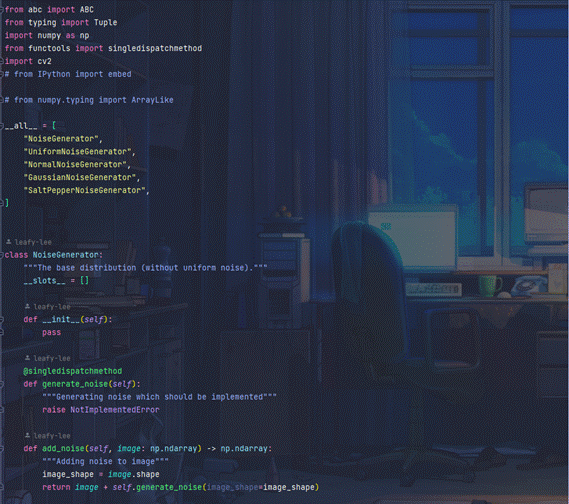

a) 噪声定义文件 noise.py

- __all__定义将定义的所有类，从而更好的供后续使用，定义噪声基类与虚函数。
- 这里本来想用 python 3.8 提供的 @singledispatchmethod 装饰器，在抽象基类里定义两个虚函数，然后在继承的时候重载函数及调用方式，但是发现如果是继承的类好像不能直接继承（？）因为会报没有这个方法的错，只能把 @singledispatchmethod 写在类内部？不知道能否有人解答我的疑惑。

定义均匀噪声类，使用numpy.random.rand生成0，1之间的均匀噪声，同时利用平移和放缩的到任意范围的均匀噪声。
由于前面定义的的是抽象类，因此后面继承的时候需要同时继承 ABC 抽象类。
感觉这里写的有些问题，可能应该写成
class Noise(abc.ABCMeta): @abc.abstractmethod def read(self): pass不太确定。
用__slots__减少类初始化和定义时的时间消耗。
numpy.random.rand(*image_shape) 时利用了拆包，类似于 *args 的用法

- 继承均匀噪声类，使用 Box-Muller 变换得到标准正态分布的噪声。
- Box-Muller 的核心就是通过极坐标变换将正态分布的指数变换为极坐标的辐角的均匀分布。

通过重参数化技巧(re-parameterization trick)，从标准正态分布噪声生成带有均值和方差的高斯噪声分布。同时设置两种加噪声方式：分通道添加或整体添加。
注意，这里如果想直接使用 cv2 或其他方式直接可视化，有两种方式，
一种是除 255 变换到 [0, 1] 之间，
第二种是通过 uint8 的方式转化为整值。
如果直接可视化的话，会产生过亮的情况，因为会自动判定为 0-1 从而被 clip 成高亮图像。

- 继承均匀噪声类，生成均匀噪声，根据均匀噪声的值确定为原始图、胡椒噪声或原始噪声。
b) 空间滤波器定义文件 spatial_filter.py

- 定义静态函数，完成计算规定kernel内的均值，中值与自适应中值。
- 我有一个坏习惯，经常使用 print debug（虽然我现在还是这样），但我尝试使用 log 来输出。

- 定义Spatial Filter类，同时，由于防止复用时覆盖掉特性，以及在要求的三个函数中不必每次初始化类，因此重载__new__函数，保证只需要使用同一个Spatial Filter，同时实现将图像翻转的功能，供后续对称padding使用。

- 定义两种padding方式，对称填充和零填充。

- 对输入参数做预处理，填充未给出的值。
- （主要是 pycharm 报错了，duplicate too long）所以我就写进一个函数了。

- 实现中值滤波与均值滤波。

- 实现自适应中值滤波。
c) 测量指标文件 metric.py
- 由于并非任务要求，因此这里使用了库函数。
- 本来想用 sys.modules 调用变量，后来才知道类和函数是存在 sys.modules 里的，变量是存在 locals() 或者 globals() 里。


- 完成了所有图像的指标测试。
d) 主文件（五个函数及主函数调用）

- 两种噪声的生成。

- 三种滤波结果，同时包括对称填充和零填充。

- 主函数——图像读入与加噪声，添加了高斯噪声、高概率椒盐噪声和低概率椒盐噪声。

- 主函数——滤波与指标计算。